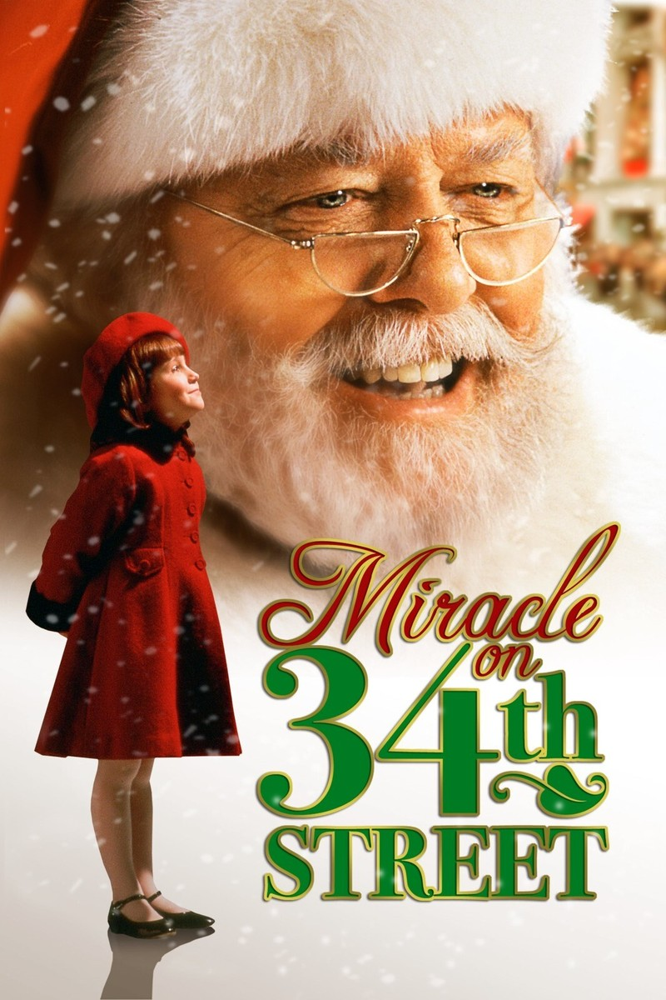
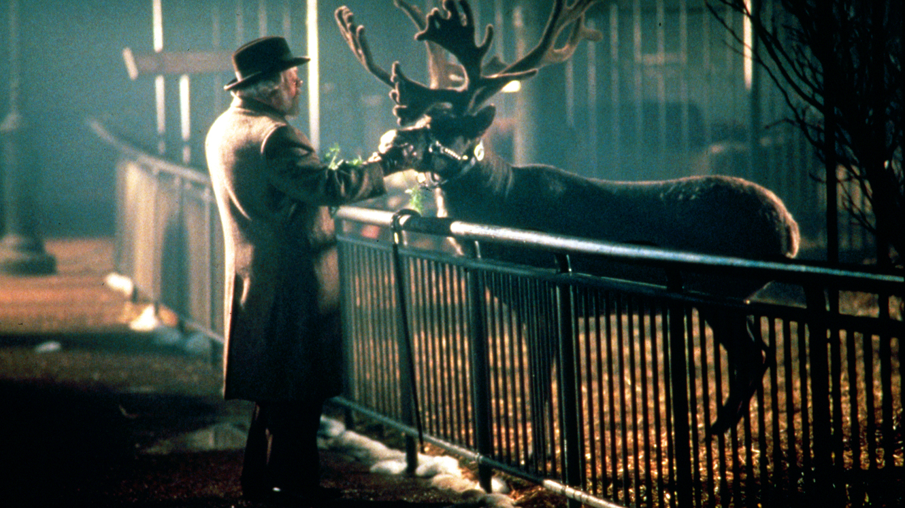
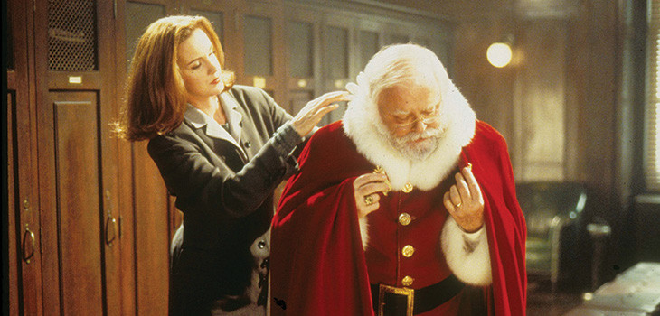

Miracle on 34th Street
19947+ 1h 54minInfantil/comedia
La ejecutiva de una tienda tiene sus dudas cuando el anciano al que contrató afirma ser el verdadero Papá Noel.
Elenco:

La ejecutiva de una tienda tiene sus dudas cuando el anciano al que contrató afirma ser el verdadero Papá Noel.
Elenco:


"La Navidad no es solo un día, es un estado de ánimo ..."
"No pases por alto esos preciosos intangibles. Descubrirás que esas son las únicas cosas que valen la pena."

"La fe es creer en las cosas cuando el sentido común te dice que no lo hagas"
"Hay muchos 'ismos' malos flotando en este mundo y uno de los peores es el comercialismo"
"Si al principio no tienes éxito, inténtalo, inténtalo de nuevo"
Desde el corazón de un reno con nariz brillante y espíritu navideño de sobra, solo puedo decir: Miracle on 34th Street no es solo una película. Es un recordatorio de por qué tiramos del trineo cada año sin falta: porque los milagros existen… si crees en ellos.
¡Caramelos y cascabeles! Acabo de ver Miracle on 34th Street (la versión de 1994, sí, la de colores brillantes y humanos algo testarudos), y estoy tan emocionado que casi dejo caer mi taza de chocolate caliente con malvaviscos.
Miracle on 34th Street es más que una película navideña. Es un recordatorio de lo que la Navidad realmente significa: creer cuando no hay razones, amar cuando es difícil, y mantener viva la magia en un mundo que a veces se olvida de soñar.
Si ves esta película, hazlo con cuidado. Podría… y no digo que lo hará… pero podría… hacer que tu corazón crezca tres tallas más grande. ¡Maldita magia navideña!
Lo Que Tu Dices
Comenta Aqui